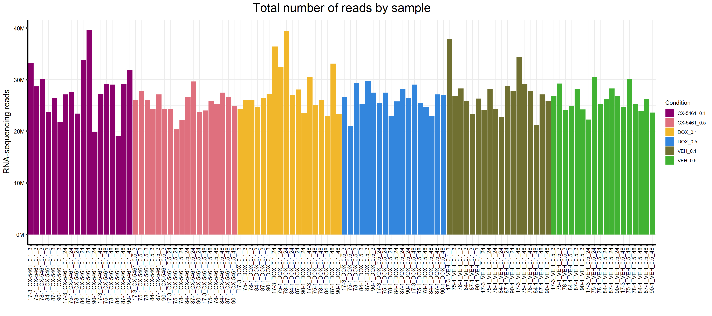
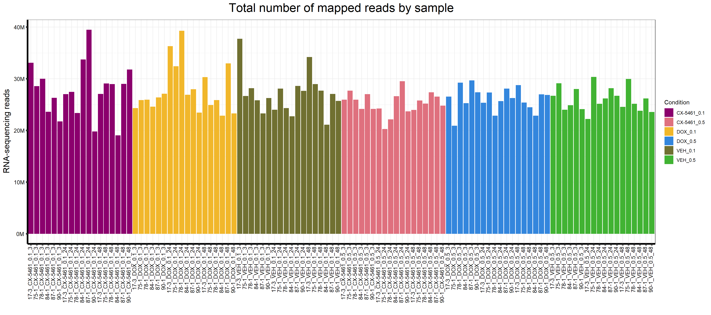
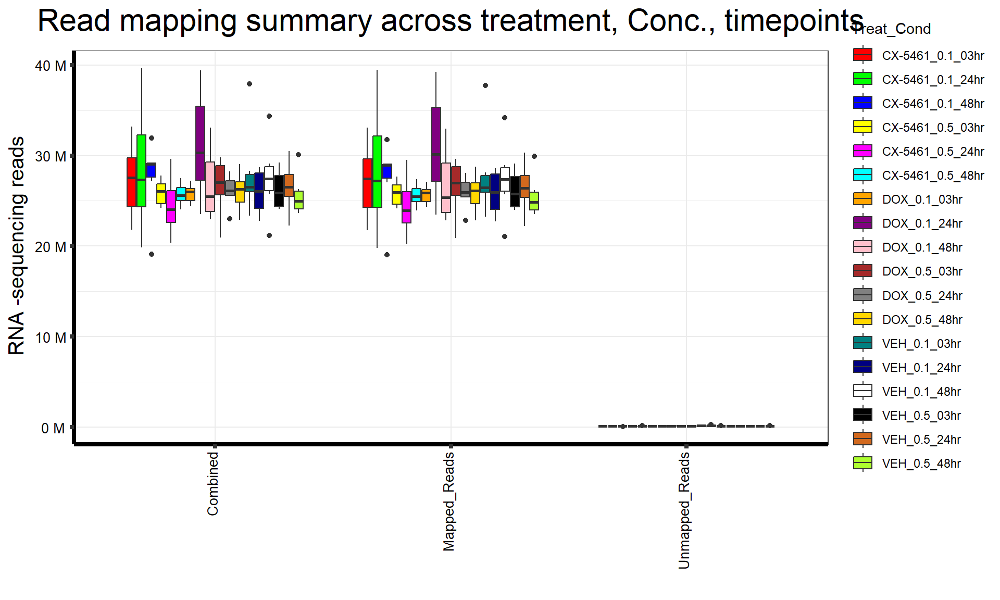

Total Reads and Mapped Reads
Your Name
2025-01-30
Last updated: 2025-01-30
Checks: 7 0
Knit directory: Paul_CX_2025/
This reproducible R Markdown analysis was created with workflowr (version 1.7.1). The Checks tab describes the reproducibility checks that were applied when the results were created. The Past versions tab lists the development history.
Great! Since the R Markdown file has been committed to the Git repository, you know the exact version of the code that produced these results.
Great job! The global environment was empty. Objects defined in the global environment can affect the analysis in your R Markdown file in unknown ways. For reproduciblity it’s best to always run the code in an empty environment.
The command set.seed(20250129) was run prior to running
the code in the R Markdown file. Setting a seed ensures that any results
that rely on randomness, e.g. subsampling or permutations, are
reproducible.
Great job! Recording the operating system, R version, and package versions is critical for reproducibility.
Nice! There were no cached chunks for this analysis, so you can be confident that you successfully produced the results during this run.
Great job! Using relative paths to the files within your workflowr project makes it easier to run your code on other machines.
Great! You are using Git for version control. Tracking code development and connecting the code version to the results is critical for reproducibility.
The results in this page were generated with repository version 650faeb. See the Past versions tab to see a history of the changes made to the R Markdown and HTML files.
Note that you need to be careful to ensure that all relevant files for
the analysis have been committed to Git prior to generating the results
(you can use wflow_publish or
wflow_git_commit). workflowr only checks the R Markdown
file, but you know if there are other scripts or data files that it
depends on. Below is the status of the Git repository when the results
were generated:
Ignored files:
Ignored: .RData
Ignored: .Rhistory
Ignored: .Rproj.user/
Note that any generated files, e.g. HTML, png, CSS, etc., are not included in this status report because it is ok for generated content to have uncommitted changes.
These are the previous versions of the repository in which changes were
made to the R Markdown
(analysis/total_reads_and_mapped_reads.Rmd) and HTML
(docs/total_reads_and_mapped_reads.html) files. If you’ve
configured a remote Git repository (see ?wflow_git_remote),
click on the hyperlinks in the table below to view the files as they
were in that past version.
| File | Version | Author | Date | Message |
|---|---|---|---|---|
| Rmd | 650faeb | sayanpaul01 | 2025-01-30 | Updated total reads and mapped reads with code visibility and plots |
| html | 2102950 | sayanpaul01 | 2025-01-30 | Build site. |
| Rmd | aab567b | sayanpaul01 | 2025-01-30 | Updated total reads and mapped reads with code visibility and plots |
| html | 2830835 | sayanpaul01 | 2025-01-30 | Build site. |
| html | 7924924 | sayanpaul01 | 2025-01-30 | Build site. |
| Rmd | 03eba20 | sayanpaul01 | 2025-01-30 | Added Total Reads and Mapped Reads visualization |
| html | 6b6d057 | sayanpaul01 | 2025-01-30 | Build site. |
| Rmd | ea621dc | sayanpaul01 | 2025-01-30 | Added Total Reads and Mapped Reads visualization |
| html | d905153 | sayanpaul01 | 2025-01-30 | Build site. |
| Rmd | e3b04c6 | sayanpaul01 | 2025-01-30 | Added Total Reads and Mapped Reads visualization |
📌 Total Reads by Sample
This section visualizes the total RNA-sequencing reads across samples.
Load Required Libraries
# Load necessary R packages
library(limma)Warning: package 'limma' was built under R version 4.3.1library(RColorBrewer)
library(data.table)Warning: package 'data.table' was built under R version 4.3.2library(tidyverse)Warning: package 'tidyverse' was built under R version 4.3.2Warning: package 'ggplot2' was built under R version 4.3.3Warning: package 'tidyr' was built under R version 4.3.3Warning: package 'readr' was built under R version 4.3.3Warning: package 'purrr' was built under R version 4.3.1Warning: package 'dplyr' was built under R version 4.3.2Warning: package 'stringr' was built under R version 4.3.2Warning: package 'lubridate' was built under R version 4.3.1── Attaching core tidyverse packages ──────────────────────── tidyverse 2.0.0 ──
✔ dplyr 1.1.4 ✔ readr 2.1.5
✔ forcats 1.0.0 ✔ stringr 1.5.1
✔ ggplot2 3.5.1 ✔ tibble 3.2.1
✔ lubridate 1.9.3 ✔ tidyr 1.3.1
✔ purrr 1.0.2
── Conflicts ────────────────────────────────────────── tidyverse_conflicts() ──
✖ dplyr::between() masks data.table::between()
✖ dplyr::filter() masks stats::filter()
✖ dplyr::first() masks data.table::first()
✖ lubridate::hour() masks data.table::hour()
✖ lubridate::isoweek() masks data.table::isoweek()
✖ dplyr::lag() masks stats::lag()
✖ dplyr::last() masks data.table::last()
✖ lubridate::mday() masks data.table::mday()
✖ lubridate::minute() masks data.table::minute()
✖ lubridate::month() masks data.table::month()
✖ lubridate::quarter() masks data.table::quarter()
✖ lubridate::second() masks data.table::second()
✖ purrr::transpose() masks data.table::transpose()
✖ lubridate::wday() masks data.table::wday()
✖ lubridate::week() masks data.table::week()
✖ lubridate::yday() masks data.table::yday()
✖ lubridate::year() masks data.table::year()
ℹ Use the conflicted package (<http://conflicted.r-lib.org/>) to force all conflicts to become errorslibrary(scales)Warning: package 'scales' was built under R version 4.3.2
Attaching package: 'scales'
The following object is masked from 'package:purrr':
discard
The following object is masked from 'package:readr':
col_factorlibrary(ggplot2)
library(dplyr)📍 2. Load Data
# Load the dataset containing the total reads per sample
align <- read.csv("data/Total_number_of_reads_by_sample.csv") # Ensure the file is in the 'data/' folder
map <- data.frame(align)📍 3. Define Color Palettes
# Define color palettes for plots
drug_palc <- c("#8B006D","#DF707E","#F1B72B", "#3386DD","#707031","#41B333")
Ind_palc <- c("#ffbe0b","#ff006e","#fb5607", "#8338ec","#3a86ff","#4a4e69")
Time_palc <- c("#0000FF","#80FF00", "#FF00FF")
Combined_palc <- c("#FF0000","#00FF00","#0000FF","#FFFF00","#FF00FF","#00FFFF",
"#FFA500","#800080","#FFC0CB","#A52A2A","#808080","#FFD700",
"#008080","#000080","#FFFFFF","#000000","#D2691E","#ADFF2F")📍 4. Prepare Data
# Factor Sample_name to maintain order
map$Sample_name <- factor(map$Sample_name, levels = map$Sample_name)📍 5. Plot Total Reads by Sample
# Generate the bar plot
p <- ggplot(map, aes(x = Sample_name, y = Counts, fill = Condition)) +
geom_col() +
scale_fill_manual(values = drug_palc) +
scale_y_continuous(labels = function(x) paste0(x / 1e6, "M")) +
ggtitle(expression("Total number of reads by sample")) +
xlab("") +
ylab(expression("RNA-sequencing reads")) +
theme_bw() +
theme(
plot.title = element_text(size = rel(2), hjust = 0.5),
axis.title = element_text(size = 15, color = "black"),
axis.ticks = element_line(linewidth = 1.5),
axis.line = element_line(linewidth = 1.5),
axis.text.y = element_text(size = 10, color = "black", angle = 0, hjust = 0.8, vjust = 0.5),
axis.text.x = element_text(size = 10, color = "black", angle = 90, hjust = 1, vjust = 0.2)
)
# Save the plot as an image
ggsave("output/total_reads_by_sample_plot.png", p)
# Display the plot in the document
p
| Version | Author | Date |
|---|---|---|
| d905153 | sayanpaul01 | 2025-01-30 |
📌 Total Reads by Treatment
📍 Define Color Palettes
# Define color palettes for plots
drug_palc <- c("#8B006D","#DF707E","#F1B72B", "#3386DD","#707031","#41B333")
Ind_palc <- c("#ffbe0b","#ff006e","#fb5607", "#8338ec","#3a86ff","#4a4e69")
Time_palc <- c("#0000FF","#80FF00", "#FF00FF")
Combined_palc <- c("#FF0000","#00FF00","#0000FF","#FFFF00","#FF00FF","#00FFFF",
"#FFA500","#800080","#FFC0CB","#A52A2A","#808080","#FFD700",
"#008080","#000080","#FFFFFF","#000000","#D2691E","#ADFF2F")📍 Load dataset for total reads by treatment
align1 <- read.csv("data/Total_number_of_reads_by_treatment.csv") # Ensure this file is inside the 'data/' folder
map1 <- data.frame(align1)📍 Generate the boxplot
p_treatment <- ggplot(map1, aes(x = Condition, y = Counts, fill = Condition)) +
geom_boxplot() +
scale_fill_manual(values = drug_palc) +
scale_y_continuous(
limits = c(0, 40000000), # Set y-axis range
labels = function(x) paste0(x / 1e6, "M") # Display labels in millions
) +
ggtitle(expression("Total number of reads by treatment")) +
xlab("") +
ylab(expression("RNA-sequencing reads")) +
theme_bw() +
theme(
plot.title = element_text(size = rel(2), hjust = 0.5),
axis.title = element_text(size = 15, color = "black"),
axis.text.x = element_text(size = 10, angle = 90, hjust = 1, vjust = 0.2)
)
# Save the plot as an image
ggsave("output/total_reads_by_treatment_plot.png", p_treatment)
# Display the plot in the document
p_treatment
| Version | Author | Date |
|---|---|---|
| d905153 | sayanpaul01 | 2025-01-30 |
📌 Total Reads by Individuals
📍 Define Color Palettes
# Define color palette for individuals
Ind_palc <- c("#ffbe0b","#ff006e","#fb5607", "#8338ec","#3a86ff","#4a4e69")📍 Load dataset for total reads by individual
# Load dataset for total reads by individual
align2 <- read.csv("data/Total_number_of_reads_by_Individuals.csv") # Ensure this file is inside the 'data/' folder
map2 <- data.frame(align2)📍 Generate the boxplot
# Generate the boxplot
p_individual <- ggplot(map2, aes(x = Ind, y = Counts, fill = Individual)) +
geom_boxplot() +
scale_fill_manual(values = Ind_palc) +
scale_y_continuous(
limits = c(0, 40000000), # Set y-axis range
labels = function(x) paste0(x / 1e6, "M") # Display labels in millions
) +
ggtitle(expression("Total number of reads by individual")) +
xlab("") +
ylab(expression("RNA-sequencing reads")) +
theme_bw() +
theme(
plot.title = element_text(size = rel(2), hjust = 0.5),
axis.title = element_text(size = 15, color = "black"),
axis.text.x = element_text(size = 10, angle = 90, hjust = 1, vjust = 0.2)
)
# Save the plot as an image
ggsave("output/total_reads_by_individual_plot.png", p_individual)
# Display the plot in the document
p_individual
| Version | Author | Date |
|---|---|---|
| d905153 | sayanpaul01 | 2025-01-30 |
📌 Total Reads by Time
📍 Define Color Palettes
# Define color palette for time points
Time_palc <- c("#0000FF","#80FF00", "#FF00FF")📍 Load dataset for total reads by time
# Load dataset for total reads by time
align3 <- read.csv("data/Total_number_of_reads_by_time.csv") # Ensure this file is inside the 'data/' folder
map3 <- data.frame(align3)📍 Generate the boxplot
# Generate the boxplot
p_time <- ggplot(map3, aes(x = Condition, y = Counts, fill = Time)) +
geom_boxplot() +
scale_fill_manual(values = Time_palc) +
scale_y_continuous(
limits = c(0, 40000000), # Set y-axis range
labels = function(x) paste0(x / 1e6, "M") # Display labels in millions
) +
ggtitle(expression("Total number of reads by time")) +
xlab("") +
ylab(expression("RNA-sequencing reads")) +
theme_bw() +
theme(
plot.title = element_text(size = rel(2), hjust = 0.5),
axis.title = element_text(size = 15, color = "black"),
axis.text.x = element_text(size = 10, angle = 90, hjust = 1, vjust = 0.2)
)
# Save the plot as an image
ggsave("output/total_reads_by_time_plot.png", p_time)
# Display the plot in the document
p_time
| Version | Author | Date |
|---|---|---|
| d905153 | sayanpaul01 | 2025-01-30 |
📌 Mapped Reads by Sample
📍 2. Load Data
# Load dataset for total mapped reads by sample
align_mapped_sample <- read.csv("data/Total_number_of_mapped_reads_by_sample.csv")
map_mapped_sample <- data.frame(align_mapped_sample)
# Factor Sample Name
map_mapped_sample$Sample_name <- factor(map_mapped_sample$Sample_name, levels = map_mapped_sample$Sample_name)📍 3. Define Color Palettes
# Define color palettes for plots
drug_palc <- c("#8B006D","#DF707E","#F1B72B", "#3386DD","#707031","#41B333")
Ind_palc <- c("#ffbe0b","#ff006e","#fb5607", "#8338ec","#3a86ff","#4a4e69")
Time_palc <- c("#0000FF","#80FF00", "#FF00FF")
Map_palc <- c("#9b19f5","#e6d800", "#b3d4ff")
Combined_palc <- c("#FF0000","#00FF00","#0000FF","#FFFF00","#FF00FF","#00FFFF",
"#FFA500","#800080","#FFC0CB","#A52A2A","#808080","#FFD700",
"#008080","#000080","#FFFFFF","#000000","#D2691E","#ADFF2F")📍 5. Plot Mapped Reads by Sample
# Generate the bar plot
p_mapped <- ggplot(map_mapped_sample, aes(x = Sample_name, y = Counts, fill = Condition)) +
geom_col() +
scale_fill_manual(values = drug_palc) +
scale_y_continuous(labels = function(x) paste0(x / 1e6, "M")) +
ggtitle(expression("Total number of mapped reads by sample")) +
xlab("") +
ylab(expression("RNA-sequencing reads")) +
theme_bw() +
theme(
plot.title = element_text(size = rel(2), hjust = 0.5),
axis.title = element_text(size = 15, color = "black"),
axis.ticks = element_line(linewidth = 1.5),
axis.line = element_line(linewidth = 1.5),
axis.text.y = element_text(size = 10, color = "black", angle = 0, hjust = 0.8, vjust = 0.5),
axis.text.x = element_text(size = 10, color = "black", angle = 90, hjust = 1, vjust = 0.2)
)
# Save the plot as an image
ggsave("output/total_mapped_reads_by_sample_plot.png", p_mapped)
# Display the plot in the document
p_mapped
📌 Mapped Reads by Treatment
📍 Define Color Palettes
# Define color palettes for plots
drug_palc <- c("#8B006D","#DF707E","#F1B72B", "#3386DD","#707031","#41B333")
Ind_palc <- c("#ffbe0b","#ff006e","#fb5607", "#8338ec","#3a86ff","#4a4e69")
Time_palc <- c("#0000FF","#80FF00", "#FF00FF")
Combined_palc <- c("#FF0000","#00FF00","#0000FF","#FFFF00","#FF00FF","#00FFFF",
"#FFA500","#800080","#FFC0CB","#A52A2A","#808080","#FFD700",
"#008080","#000080","#FFFFFF","#000000","#D2691E","#ADFF2F")📍 Load dataset for Mapped reads by treatment
align4 <- read.csv("data/Total_number_of_mapped_reads_by_treatment.csv") # Ensure this file is inside the 'data/' folder
map4 <- data.frame(align4)📍 Generate the boxplot
p__mapped_treatment <- ggplot(map4, aes(x = Condition, y = Counts, fill = Condition)) +
geom_boxplot() +
scale_fill_manual(values = drug_palc) +
scale_y_continuous(
limits = c(0, 40000000), # Set y-axis range
labels = function(x) paste0(x / 1e6, "M") # Display labels in millions
) +
ggtitle(expression("Total number of mapped reads by treatment")) +
xlab("") +
ylab(expression("RNA-sequencing reads")) +
theme_bw() +
theme(
plot.title = element_text(size = rel(2), hjust = 0.5),
axis.title = element_text(size = 15, color = "black"),
axis.text.x = element_text(size = 10, angle = 90, hjust = 1, vjust = 0.2)
)
# Save the plot as an image
ggsave("output/Mapped_reads_by_treatment_plot.png", p__mapped_treatment)
# Display the plot in the document
p__mapped_treatment
| Version | Author | Date |
|---|---|---|
| 6b6d057 | sayanpaul01 | 2025-01-30 |
📌 Mapped Reads by Individuals
📍 Define Color Palettes
# Define color palette for individuals
Ind_palc <- c("#ffbe0b","#ff006e","#fb5607", "#8338ec","#3a86ff","#4a4e69")📍 Load dataset for Mapped reads by individual
# Load dataset for Mapped reads by individual
align5 <- read.csv("data/Total_number_of_Mapped_reads_by_Individuals.csv") # Ensure this file is inside the 'data/' folder
map5 <- data.frame(align5)📍 Generate the boxplot
# Generate the boxplot
p_mapped_individual <- ggplot(map5, aes(x = Ind, y = Counts, fill = Individual)) +
geom_boxplot() +
scale_fill_manual(values = Ind_palc) +
scale_y_continuous(
limits = c(0, 40000000), # Set y-axis range
labels = function(x) paste0(x / 1e6, "M") # Display labels in millions
) +
ggtitle(expression("Total number of mapped number of reads by individual")) +
xlab("") +
ylab(expression("RNA-sequencing reads")) +
theme_bw() +
theme(
plot.title = element_text(size = rel(2), hjust = 0.5),
axis.title = element_text(size = 15, color = "black"),
axis.text.x = element_text(size = 10, angle = 90, hjust = 1, vjust = 0.2)
)
# Save the plot as an image
ggsave("output/Mapped_reads_by_individual_plot.png", p_mapped_individual)
# Display the plot in the document
p_mapped_individual
| Version | Author | Date |
|---|---|---|
| 6b6d057 | sayanpaul01 | 2025-01-30 |
📌 Mapped Reads by Time
📍 Define Color Palettes
# Define color palette for time points
Time_palc <- c("#0000FF","#80FF00", "#FF00FF")📍 Load dataset for Mapped reads by time
# Load dataset for Mapped reads by time
align6 <- read.csv("data/Total_number_of_mapped_reads_by_time.csv") # Ensure this file is inside the 'data/' folder
map6 <- data.frame(align6)📍 Generate the boxplot
# Generate the boxplot
p_mapped_time <- ggplot(map6, aes(x = Condition, y = Counts, fill = Time)) +
geom_boxplot() +
scale_fill_manual(values = Time_palc) +
scale_y_continuous(
limits = c(0, 40000000), # Set y-axis range
labels = function(x) paste0(x / 1e6, "M") # Display labels in millions
) +
ggtitle(expression("Total number of mapped reads by time")) +
xlab("") +
ylab(expression("RNA-sequencing reads")) +
theme_bw() +
theme(
plot.title = element_text(size = rel(2), hjust = 0.5),
axis.title = element_text(size = 15, color = "black"),
axis.text.x = element_text(size = 10, angle = 90, hjust = 1, vjust = 0.2)
)
# Save the plot as an image
ggsave("output/total_reads_by_time_plot.png", p_mapped_time)
# Display the plot in the document
p_mapped_time
🔹 Read Mapping Summary
# Load dataset for mapping summary
align_mapping <- read.csv("data/Comparison.csv")
map_mapping <- data.frame(align_mapping)📌 Read Mapping Across Samples
p_mapping_samples <- ggplot(map_mapping, aes(x = Sample_name, y = Total, fill = Mapping)) +
geom_bar(position="dodge", stat="identity")+
#geom_hline(aes(yintercept=20000000))+
scale_fill_manual(values=Map_palc)+
scale_y_continuous(labels = label_number(suffix = " M", scale = 1e-6))+
ggtitle(expression("Read mapping summary across samples"))+
xlab("")+
ylab(expression("RNA -sequencing reads"))+
theme_bw()+
theme(plot.title = element_text(size = rel(2), hjust = 0.5),
axis.title = element_text(size = 15, color = "black"),
axis.ticks = element_line(linewidth = 1.5),
axis.line = element_line(linewidth = 1.5),
axis.text.y = element_text(size =10, color = "black", angle = 0, hjust = 0.8, vjust = 0.5),
axis.text.x = element_text(size =10, color = "black", angle = 90, hjust = 1, vjust = 0.2),
#strip.text.x = element_text(size = 15, color = "black", face = "bold"),
strip.text.y = element_text(color = "white"))
p_mapping_samples
📌 Read Mapping Across Treatments
p_mapping_treatments <- ggplot(map_mapping, aes(x = Mapping, y = Total, fill = Condition)) +
geom_boxplot() +
scale_fill_manual(values=drug_palc) +
scale_y_continuous(labels = function(x) paste0(x / 1e6, "M")) +
ggtitle("Read Mapping Summary Across Treatments") +
theme_bw()
p_mapping_treatments
| Version | Author | Date |
|---|---|---|
| 7924924 | sayanpaul01 | 2025-01-30 |
📌 Read Mapping Across Individuals
p_mapping_individuals <- ggplot(map_mapping, aes(x = Mapping, y = Total, fill = Individual)) +
geom_boxplot() +
scale_fill_manual(values=Ind_palc) +
scale_y_continuous(labels = function(x) paste0(x / 1e6, "M")) +
ggtitle("Read Mapping Summary Across Individuals") +
theme_bw()
p_mapping_individuals
| Version | Author | Date |
|---|---|---|
| 7924924 | sayanpaul01 | 2025-01-30 |
📌 Read Mapping Across Timepoints
p_mapping_time <- ggplot(map_mapping, aes(x = Mapping, y = Total, fill = Time)) +
geom_boxplot() +
scale_fill_manual(values=Ind_palc) +
scale_y_continuous(labels = function(x) paste0(x / 1e6, "M")) +
ggtitle("Read Mapping Summary Across Timepoints") +
theme_bw()
p_mapping_time
| Version | Author | Date |
|---|---|---|
| 7924924 | sayanpaul01 | 2025-01-30 |
📌 Read Mapping Across treatment, concentration, and timepoints
map_mapping %>%
ggplot(., aes (x = Mapping, y = Total, fill = Treat_Cond)) +
geom_boxplot() +
scale_fill_manual(values = Combined_palc) +
scale_y_continuous(labels = label_number(suffix = " M", scale = 1e-6)) +
ggtitle(expression("Read mapping summary across treatment, Conc., timepoints")) +
xlab("") +
ylab(expression("RNA -sequencing reads")) +
theme_bw() +
theme(plot.title = element_text(size = rel(2), hjust = 0.5),
axis.title = element_text(size = 15, color = "black"),
axis.ticks = element_line(linewidth = 1.5),
axis.line = element_line(linewidth = 1.5),
axis.text.y = element_text(size = 10, color = "black", angle = 0, hjust = 0.8, vjust = 0.5),
axis.text.x = element_text(size = 10, color = "black", angle = 90, hjust = 1, vjust = 0.2),
strip.text.y = element_text(color = "white"))
| Version | Author | Date |
|---|---|---|
| 7924924 | sayanpaul01 | 2025-01-30 |
sessionInfo()R version 4.3.0 (2023-04-21 ucrt)
Platform: x86_64-w64-mingw32/x64 (64-bit)
Running under: Windows 11 x64 (build 22631)
Matrix products: default
locale:
[1] LC_COLLATE=English_United States.utf8
[2] LC_CTYPE=English_United States.utf8
[3] LC_MONETARY=English_United States.utf8
[4] LC_NUMERIC=C
[5] LC_TIME=English_United States.utf8
time zone: America/Chicago
tzcode source: internal
attached base packages:
[1] stats graphics grDevices utils datasets methods base
other attached packages:
[1] ggpubr_0.6.0 Hmisc_5.2-0 corrplot_0.95 ggrepel_0.9.6
[5] cowplot_1.1.3 biomaRt_2.58.2 reshape2_1.4.4 gridExtra_2.3
[9] edgeR_4.0.1 scales_1.3.0 lubridate_1.9.3 forcats_1.0.0
[13] stringr_1.5.1 dplyr_1.1.4 purrr_1.0.2 readr_2.1.5
[17] tidyr_1.3.1 tibble_3.2.1 ggplot2_3.5.1 tidyverse_2.0.0
[21] data.table_1.14.10 RColorBrewer_1.1-3 limma_3.58.1 workflowr_1.7.1
loaded via a namespace (and not attached):
[1] DBI_1.2.3 bitops_1.0-7 rlang_1.1.3
[4] magrittr_2.0.3 git2r_0.35.0 compiler_4.3.0
[7] RSQLite_2.3.3 getPass_0.2-4 png_0.1-8
[10] systemfonts_1.1.0 callr_3.7.6 vctrs_0.6.5
[13] pkgconfig_2.0.3 crayon_1.5.3 fastmap_1.1.1
[16] backports_1.5.0 dbplyr_2.5.0 XVector_0.42.0
[19] labeling_0.4.3 promises_1.3.0 rmarkdown_2.29
[22] tzdb_0.4.0 ps_1.8.1 ragg_1.3.3
[25] bit_4.0.5 xfun_0.50 zlibbioc_1.48.0
[28] cachem_1.0.8 GenomeInfoDb_1.38.8 jsonlite_1.8.9
[31] progress_1.2.3 blob_1.2.4 later_1.3.2
[34] broom_1.0.7 cluster_2.1.6 prettyunits_1.2.0
[37] R6_2.5.1 bslib_0.8.0 stringi_1.8.3
[40] car_3.1-3 rpart_4.1.23 jquerylib_0.1.4
[43] Rcpp_1.0.12 knitr_1.49 base64enc_0.1-3
[46] IRanges_2.36.0 nnet_7.3-19 httpuv_1.6.15
[49] timechange_0.3.0 tidyselect_1.2.1 abind_1.4-8
[52] rstudioapi_0.17.1 yaml_2.3.10 curl_6.0.1
[55] processx_3.8.5 lattice_0.22-5 plyr_1.8.9
[58] Biobase_2.62.0 withr_3.0.2 KEGGREST_1.42.0
[61] evaluate_1.0.3 foreign_0.8-87 BiocFileCache_2.10.2
[64] xml2_1.3.6 Biostrings_2.70.1 pillar_1.10.1
[67] filelock_1.0.3 carData_3.0-5 whisker_0.4.1
[70] checkmate_2.3.2 stats4_4.3.0 generics_0.1.3
[73] rprojroot_2.0.4 RCurl_1.98-1.13 S4Vectors_0.40.1
[76] hms_1.1.3 munsell_0.5.1 glue_1.7.0
[79] tools_4.3.0 ggsignif_0.6.4 locfit_1.5-9.8
[82] fs_1.6.3 XML_3.99-0.17 grid_4.3.0
[85] AnnotationDbi_1.64.1 colorspace_2.1-0 GenomeInfoDbData_1.2.11
[88] htmlTable_2.4.3 Formula_1.2-5 cli_3.6.1
[91] rappdirs_0.3.3 textshaping_0.4.1 gtable_0.3.6
[94] rstatix_0.7.2 sass_0.4.9 digest_0.6.34
[97] BiocGenerics_0.48.1 htmlwidgets_1.6.4 farver_2.1.2
[100] memoise_2.0.1 htmltools_0.5.8.1 lifecycle_1.0.4
[103] httr_1.4.7 statmod_1.5.0 bit64_4.0.5